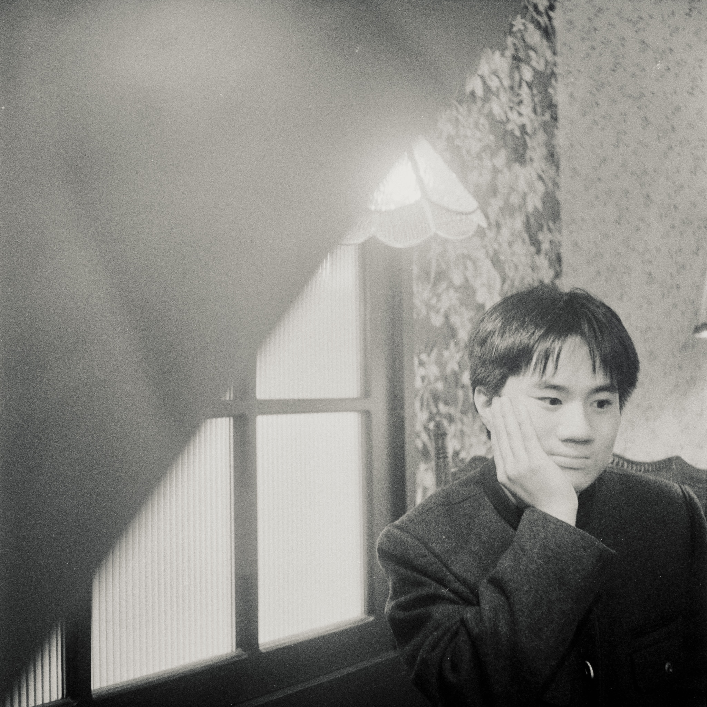

Jimmy Hsieh 謝定衡
Jimmy Hsieh 謝定衡
|關於 About|
謝定衡，出生於2005年，目前就讀於國立臺北商業大學，國中自學攝影，每天背著數位單眼上學，畢業前發現檔案全部毀損，立志拍攝底片。在北商與徐欽敏老師學習攝影三年並擔任攝影社社長兩年，認為攝影即信仰。
謝定衡, 18 years old, born in Taipei, is currently studying at National Taipei University of Business. He taught himself photography during middle school, carrying a DSLR to school every day. Before graduation, he discovered that all his files were corrupted, which led him to pursue film photography. He has studied photography under Professor 徐欽敏 (Hsu Chin-Min) at NTUB for three years and has served as the president of the Photography Club for two years. He believes that photography is a faith.
|經歷 Experiences|
暫無
暫無
|展覽 Exhibitions|
暫無